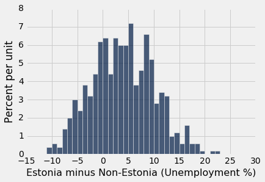
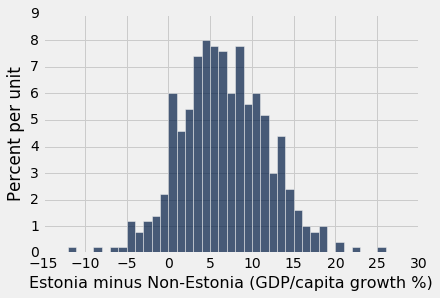
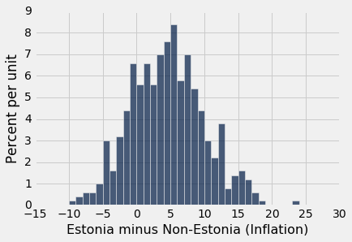
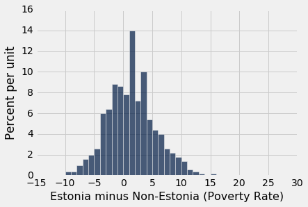
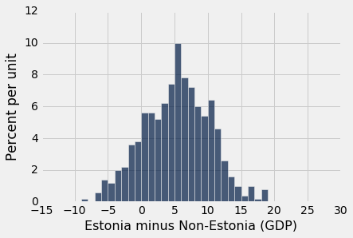
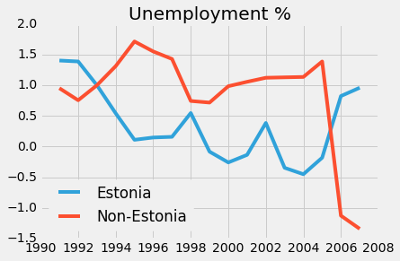
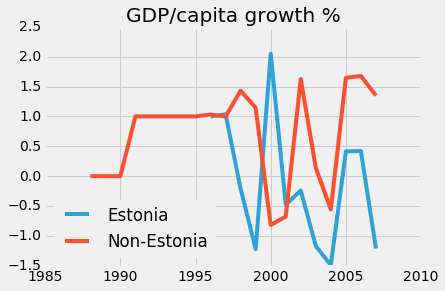
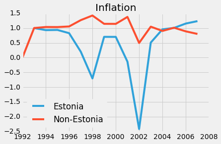
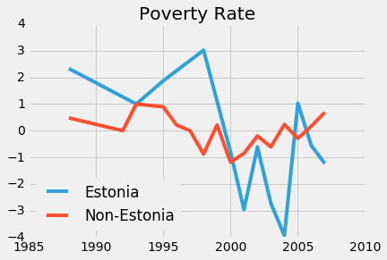
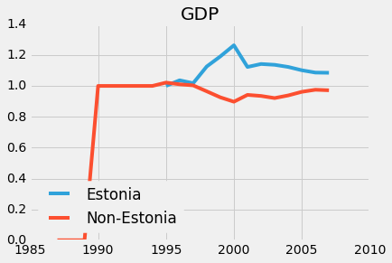

Living in the United States in 2016, we are lucky enough to be living in a country that is relatively stable, politically, socially, and economically.
However, in other parts of the world in the not so far past, drastic shifts in how states are operated have occurred. They are studied and written about in-depth from a political standpoint. The purpose of this project is to take a quantitative view on one of these regime changes -- Estonia, post-independence.
Eastern Europe: - Estonia, 1990s
We briefly mentioned Milton Friedman's Free to Choose series in class the other day. I remember an episode of this that I saw in high school. It detailed the flourishing of Estonia after free market ideas were adopted in 1992, after the break up of the Soviet Union. The first section puts Friedman's claims to a quantified test.
from datascience import Tableindicators = Table.read_table('Indicators.csv')countries = ['EST', 'LVA', 'LTU', 'UKR', 'BLR']
important_indicators = ['SL.UEM.TOTL.ZS', 'NY.GDP.PCAP.KD.ZG', 'FP.CPI.TOTL.ZG', 'SI.POV.DDAY', 'NY.GDP.MKTP.CD']
negative_indicators = ['SL.UEM.TOTL.ZS', 'FP.CPI.TOTL.ZG', 'SI.POV.DDAY']
indicator_mapping = {}
indicator_mapping['SL.UEM.TOTL.ZS'] = 'Unemployment %'
indicator_mapping['NY.GDP.PCAP.KD.ZG'] = 'GDP/capita growth %'
indicator_mapping['FP.CPI.TOTL.ZG'] = 'Inflation'
indicator_mapping['SI.POV.DDAY'] = 'Poverty Rate'
indicator_mapping['NY.GDP.MKTP.CD'] = 'GDP'
def f(x):
return x in important_indicators
def g(x):
return x in countries
eastern_europe = indicators.where('IndicatorCode', f)
eastern_europe = eastern_europe.where('CountryCode', g)
eastern_europe = eastern_europe.where(eastern_europe.column('Year') < 2008)
eastern_europe.show(10)| CountryName | CountryCode | IndicatorName | IndicatorCode | Year | Value |
|---|---|---|---|---|---|
| Ukraine | UKR | GDP at market prices (current US$) | NY.GDP.MKTP.CD | 1987 | 6.40877e+10 |
| Belarus | BLR | Poverty headcount ratio at $1.90 a day (2011 PPP) (% of ... | SI.POV.DDAY | 1988 | 0.15 |
| Estonia | EST | Poverty headcount ratio at $1.90 a day (2011 PPP) (% of ... | SI.POV.DDAY | 1988 | 0.06 |
| Latvia | LVA | Poverty headcount ratio at $1.90 a day (2011 PPP) (% of ... | SI.POV.DDAY | 1988 | 0.03 |
| Lithuania | LTU | Poverty headcount ratio at $1.90 a day (2011 PPP) (% of ... | SI.POV.DDAY | 1988 | 0.08 |
| Ukraine | UKR | GDP at market prices (current US$) | NY.GDP.MKTP.CD | 1988 | 7.47035e+10 |
| Ukraine | UKR | GDP per capita growth (annual %) | NY.GDP.PCAP.KD.ZG | 1988 | 2.11257 |
| Ukraine | UKR | Poverty headcount ratio at $1.90 a day (2011 PPP) (% of ... | SI.POV.DDAY | 1988 | 0.39 |
| Ukraine | UKR | GDP at market prices (current US$) | NY.GDP.MKTP.CD | 1989 | 8.27092e+10 |
| Ukraine | UKR | GDP per capita growth (annual %) | NY.GDP.PCAP.KD.ZG | 1989 | 3.36751 |
... (348 rows omitted)
The above table shows the z-score of each index. And in the cell below, I add the index to the main eastern_europe table as a column.
values = []
for row in eastern_europe.rows:
c = row.item('CountryCode')
i = row.item('IndicatorCode')
nominal_value = row.item('Value_z')
index = index_table.where('CountryCode', c).where('IndicatorCode', i).column('Value')[0]
indexed_value = nominal_value / index
values.append(indexed_value)
eastern_europe['Indexed Value'] = np.array(values)The Free to Choose episode about Estonia makes some grand claims about the cause and effect of their economic success after 1992, when they were facing 1000% inflation, 35% unemployment. According to the episode, the responsibility falls upon Mart Laars, the 32 year old (youngest ever!) Prime Minister, who claimed to have only read one book about economics -- Friedman's Free to Choose.
Laars implemented free market policies, namely zero corporate tax on domestic reinvestment, and a flat income tax. This analysis does not analyze the specifics of these policies, instead it attempts to determine if Estonia developed in a way different than its neighboring former Soviet Union countries.
Population: Estonia, Latvia, Lithuania, Belarus, Ukraine
Treatment group: Estonia.
Control group: The other countries named above.
Null hypothesis: After the break up of the Soviet Union until 2008, Estonia developed economically in the same way that Latvia, Lithuania, Belarus, and Ukraine did.
Alternative hypothesis: After the break up of the Soviet Union until 2008, Estonia showed better economic development than that of Latvia, Lithuania, Belarus, and Ukraine.
First, I will run a permutation test by resampling with an alpha value of 0.05. Each economic indicator will be tested separately.
Let's take a look at the data.
estonia = eastern_europe.where('CountryCode', 'EST').sort('IndicatorCode')
estonia.where('Year', 1998).show(1)| CountryName | CountryCode | IndicatorName | IndicatorCode | Year | Value | Value_z | Indexed Value |
|---|---|---|---|---|---|---|---|
| Estonia | EST | Inflation, consumer prices (annual %) | FP.CPI.TOTL.ZG | 1998 | 8.20833 | 0.446174 | -0.704111 |
... (4 rows omitted)</p
non_estonia = eastern_europe.where(eastern_europe.column('CountryCode') != 'EST').sort('IndicatorCode')
non_estonia.where('Year', 1998).show(1)| CountryName | CountryCode | IndicatorName | IndicatorCode | Year | Value | Value_z | Indexed Value |
|---|---|---|---|---|---|---|---|
| Latvia | LVA | Inflation, consumer prices (annual %) | FP.CPI.TOTL.ZG | 1998 | 4.6583 | -1.02226 | 1.63816 |
... (17 rows omitted)</p
non_estonia_summary = non_estonia.groups(['IndicatorCode', 'Year'], np.mean).select(['Year', 'IndicatorCode', 'Value mean', 'Indexed Value mean', 'Value_z mean'])
non_estonia_summary = non_estonia_summary.relabeled('Value_z mean', 'Value_z')
non_estonia_summary = non_estonia_summary.relabeled('Value mean', 'Value')
non_estonia_summary = non_estonia_summary.relabeled('Indexed Value mean', 'Indexed Value')
eastern_europe_summary = eastern_europe.groups(['IndicatorCode', 'Year'], np.mean).select(['Year', 'IndicatorCode', 'Value mean', 'Indexed Value mean', 'Value_z mean'])
eastern_europe_summary = eastern_europe_summary.relabeled('Value_z mean', 'Value_z')
eastern_europe_summary = eastern_europe_summary.relabeled('Value mean', 'Value')
eastern_europe_summary = eastern_europe_summary.relabeled('Indexed Value mean', 'Indexed Value')The above cell cleans up the tables and generates one that summarizes the non-Estonia countries as one, such that it has the same number of rows as the Estonia table -- Indexed Value is averaged over the year and indicator.
def test_statistic(e, n_e):
diff = 0
for row in e.rows:
year = row.item('Year')
if year < 2008:
indicator = row.item('IndicatorCode')
multiplier = 1
if indicator in negative_indicators:
multiplier = -1
e_value = row.item('Indexed Value')
n_e_value = n_e.where('Year', year).column('Indexed Value')
if len(n_e_value) > 0:
d = (e_value - n_e_value[0])*multiplier
diff += d
return diff
observed_statistics = {}
for indicator in important_indicators:
a = estonia.where('IndicatorCode', indicator)
b = non_estonia_summary.where('IndicatorCode', indicator)
observed_statistic = test_statistic(a, b)
observed_statistics[indicator] = observed_statistic
print(observed_statistics){'SI.POV.DDAY': 3.0301681783680658, 'FP.CPI.TOTL.ZG': 8.7216696366412858, 'NY.GDP.MKTP.CD': 1.9627897857739702, 'SL.UEM.TOTL.ZS': 8.5190924947623028, 'NY.GDP.PCAP.KD.ZG': -10.091139769882142}We calculate the test statistic that we will run our permutation test against. Essentially this statistic subtracts the Index Value of Non-Estonia for an indicator and year, and subtracts it from the corresponding value for Estonia.
For indicators like unemployment, inflation, and poverty rate, where the lower the better, I adjust according by reversing the subtraction.
Since this is a one-sided test, I don't use absolute values. Basically, the larger the observed test statistic, the "better" Estonia was for that indicator.
for indicator in important_indicators:
repetitions = 500
tvds = Table().with_column("Estonia minus Non-Estonia ({})".format(indicator_mapping[indicator]), [])
ee = eastern_europe.where('IndicatorCode', indicator)
ee = ee.where(ee.column('CountryCode') != 'EST')
for i in np.arange(repetitions):
# Construct a permuted table
est = ee.sample(80, with_replacement=True).append(estonia.sample(20, with_replacement=True))
non_est = ee.sample(100, with_replacement=True)
est = est.groups(['IndicatorCode', 'Year'], np.mean).select(['Year', 'IndicatorCode', 'Value mean', 'Indexed Value mean', 'Value_z mean'])
est = est.relabeled('Value_z mean', 'Value_z')
est = est.relabeled('Value mean', 'Value')
est = est.relabeled('Indexed Value mean', 'Indexed Value')
non_est = non_est.groups(['IndicatorCode', 'Year'], np.mean).select(['Year', 'IndicatorCode', 'Value mean', 'Indexed Value mean', 'Value_z mean'])
non_est = non_est.relabeled('Value_z mean', 'Value_z')
non_est = non_est.relabeled('Value mean', 'Value')
non_est = non_est.relabeled('Indexed Value mean', 'Indexed Value')
t = [test_statistic(est, non_est)]
tvds.append(t)
tvds.hist(bins=np.arange(-15, 30, 1))
empirical_p_value = np.count_nonzero(tvds.column(0) >= observed_statistics[indicator]) / tvds.num_rows
print('p-value:' + str(empirical_p_value) + ' for ' + indicator_mapping[indicator])p-value:0.236 for Unemployment %
p-value:0.998 for GDP/capita growth %
p-value:0.208 for Inflation
p-value:0.328 for Poverty Rate
p-value:0.738 for GDP




What do these results mean?
The p-value is quite high for all the indicators of economic prosperity. We fail to reject the null hypothesis for all of the indicators. It appears that Estonia's economic development was not very different from that of its neighbors. This is a result that goes against Friedman's narrative in Free to Choose. I think we got these results because these former Soviet Union countries were all due for some kind of positive economic growth after escaping communism. In this sense, Estonia's trajectory was not significant, despite its decidedly free market policies.
As we saw in project 3, visualizing is a good way of confirming results from a permutation test. In the graphs below, we plot Estonia vs Non-Estonia for each of the economic indicators.
%matplotlib inline
import matplotlib
import matplotlib.pyplot as plt
plt.style.use('fivethirtyeight')for indicator in important_indicators:
a = estonia.where('IndicatorCode', indicator)
b = non_estonia.groups(['IndicatorCode', 'Year'], np.mean).where('IndicatorCode', indicator)
plt.plot(a['Year'], a['Indexed Value'], label='Estonia')
plt.plot(b['Year'], b['Indexed Value mean'], label='Non-Estonia')
plt.legend(loc='lower left')
plt.title(indicator_mapping[indicator])
plt.show()




These graphs certainly do confirm our hypothesis testing. It's not clear that Estonia did a lot better. It did better in decreasing unemployment and poverty, and that's reflected in our p-values -- they are just not statistically significant!